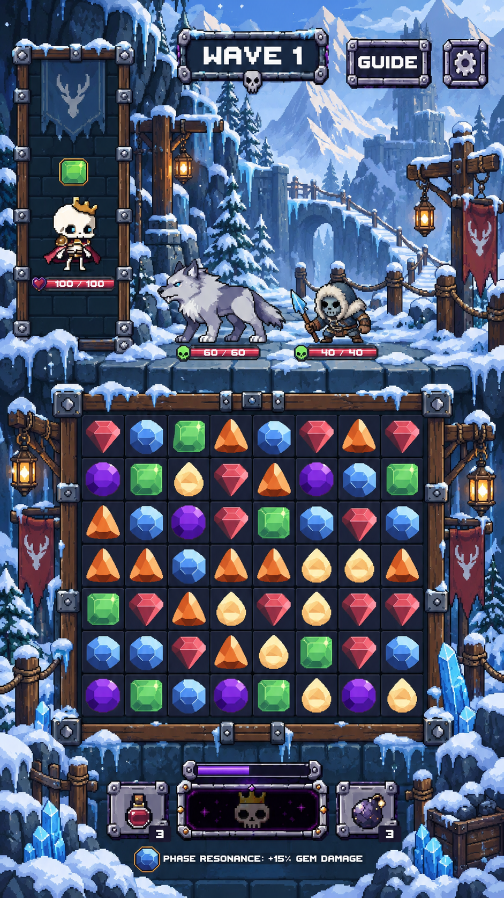
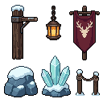
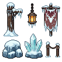
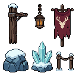
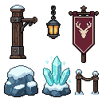

Snowy Mountain · Stage 6
Board-side environment · review candidate · not merged
Connected snowy timber supports, warm hanging lanterns, stag banners and rock/ice footings. The accepted upper scene, board dimensions, frame art and bottom HUD are preserved.
Before · approved Stage 5

After · Stage 6

Composition target

Actual Game-scene captures with live characters, enemies, gems and controls. Click a capture for its original resolution. Both sides of each comparison use the same frozen game state.
All five viewport checks passed. Upper scene, playable board and bottom HUD compare pixel-for-pixel unchanged. Existing 360×640 crowding/camera warning and tall-safe-area upper backing are retained baseline behavior.
Native modules · 1× and 3×
Raw PixelLab candidates
Selected candidate 0. One call, 10 generations. Cleanup and assembly were performed locally in LibreSprite and Unity.




Stage 7 has not started. Awaiting your review.